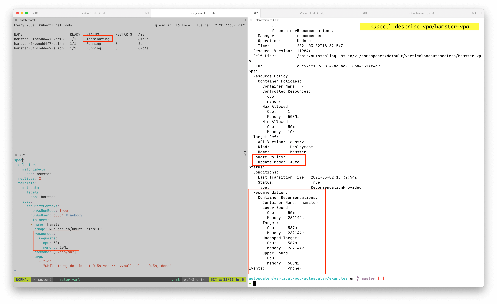

Right Sizing recommendations with VPA¶
Recommendations example¶

← On the left side you can see:
- The initial values that were set before Virtual Pod Autoscaler (VPA) took action.
- One of the pods is being terminated, due to auto mode changing the CPU/MEM values right away (causing potential downtime).
→ On the right side you can see:
- VPA recommendation couple minutes right after.
VPA install guide¶
-
In order for the instructions to work on macOS one needs to have latest version of OpenSSL from Homebrew:
brew install openssl(make use of that OpenSSL version, rather than macOS native one).- Run
brew info opensslto see the instructions for setting this openssl version as your default one.
-
Metrics-server up and running
- If you don't have metrics-server installed, run the following to install it:
kubectl apply -f https://github.com/kubernetes-sigs/metrics-server/releases/latest/download/components.yaml- Run
kubectl top nodesto check if metrics server was installed successfully
-
Vertical Pod Autoscaler installed
- Prerequisite: helm
- Install helm chart
helm repo add fairwinds-stable https://charts.fairwinds.com/stable helm install vpa fairwinds-stable/vpa --namespace vpa --create-namespace- Run helm chart tests to make sure VPA is successfully installed
helm test vpa -n vpa- Output similar to this should be visible:
LAST DEPLOYED: Thu Apr 29 19:53:50 2021 NAMESPACE: vpa STATUS: deployed REVISION: 1 TEST SUITE: vpa-test Last Started: Thu Apr 29 20:04:13 2021 Last Completed: Thu Apr 29 20:04:13 2021 Phase: Succeeded TEST SUITE: vpa-test Last Started: Thu Apr 29 20:04:14 2021 Last Completed: Thu Apr 29 20:04:14 2021 Phase: Succeeded TEST SUITE: vpa-test Last Started: Thu Apr 29 20:04:14 2021 Last Completed: Thu Apr 29 20:04:14 2021 Phase: Succeeded TEST SUITE: vpa-checkpoint-crd-available Last Started: Thu Apr 29 20:04:14 2021 Last Completed: Thu Apr 29 20:04:16 2021 Phase: Succeeded TEST SUITE: vpa-crd-available Last Started: Thu Apr 29 20:04:16 2021 Last Completed: Thu Apr 29 20:04:19 2021 Phase: Succeeded TEST SUITE: vpa-test-create-vpa Last Started: Thu Apr 29 20:04:21 2021 Last Completed: Thu Apr 29 20:04:49 2021 Phase: Succeeded TEST SUITE: vpa-metrics-api-available Last Started: Thu Apr 29 20:04:19 2021 Last Completed: Thu Apr 29 20:04:21 2021 Phase: Succeeded NOTES: Congratulations on installing the Vertical Pod Autoscaler! Components Installed: - recommender - updater -
Create VPA for each deployment to get the recommendations
- See Configure VPA for your deployment below for examples.
- Each deployment that wants make use of VPA, needs to have VPA created for it.
- Wait a day for the VPA.
-
Send us the output of:
kubectl get vpa -A -o yaml > recommendations.txt
Troubleshooting¶
-
In case something goes wrong, detailed instructions can be found at our github.
-
Make sure that on macOS the openssl from Homebrew is used
Configure VPA for your deployment¶
In order to see how it works, you can use the example bellow, which would create both example deployment & example VPA configuration for that deployment.
Once the deployment yaml is applied using kubectl view recommendations with the following line:
kubectl describe vpa/hamster-vpa
Example output:
Status:
Conditions:
Last Transition Time: 2021-04-27T06:13:54Z
Status: True
Type: RecommendationProvided
Recommendation:
Container Recommendations:
Container Name: hamster
Lower Bound:
Cpu: 491m
Memory: 262144k
Target:
Cpu: 587m
Memory: 262144k
Uncapped Target:
Cpu: 587m
Memory: 262144k
Upper Bound:
Cpu: 1
Memory: 262144k
Events: <none>
Example deployment with VPA:
# This config creates a deployment with two pods, each requesting 100 millicores
# and trying to utilize slightly above 500 millicores (repeatedly using CPU for
# 0.5s and sleeping 0.5s).
# It also creates a corresponding Vertical Pod Autoscaler that adjusts the
# requests.
# Note that the update mode is left unset, so it defaults to "Auto" mode.
---
apiVersion: "autoscaling.k8s.io/v1"
kind: VerticalPodAutoscaler
metadata:
name: hamster-vpa
namespace: default
spec:
targetRef:
apiVersion: "apps/v1"
kind: Deployment
name: hamster
updatePolicy:
# updateMode set to Off
# - runs in recommendation mode
# - does not mess with your pod request/limit configurations
updateMode: "Off"
resourcePolicy:
containerPolicies:
- containerName: '*'
controlledResources: ["cpu", "memory"]
---
apiVersion: apps/v1
kind: Deployment
metadata:
name: hamster
namespace: default
spec:
selector:
matchLabels:
app: hamster
replicas: 2
template:
metadata:
labels:
app: hamster
spec:
securityContext:
runAsNonRoot: true
runAsUser: 65534 # nobody
containers:
- name: hamster
image: k8s.gcr.io/ubuntu-slim:0.1
resources:
requests:
cpu: 100m
memory: 50Mi
command: ["/bin/sh"]
args:
- "-c"
- "while true; do timeout 0.5s yes >/dev/null; sleep 0.5s; done"
Available VPA modes¶
"Off": VPA does not automatically change resource requirements of the pods. The recommendations are calculated and can be inspected in the VPA object."Auto": VPA assigns resource requests on pod creation as well as updates them on existing pods using the preferred update mechanism. Currently this is equivalent to"Recreate"(see below). Once restart free ("in-place") update of pod requests is available, it may be used as the preferred update mechanism by the"Auto"mode.
Warning
"Auto" feature of VPA is experimental and may cause downtime for your applications.
"Initial": VPA only assigns resource requests on pod creation and never changes them later.